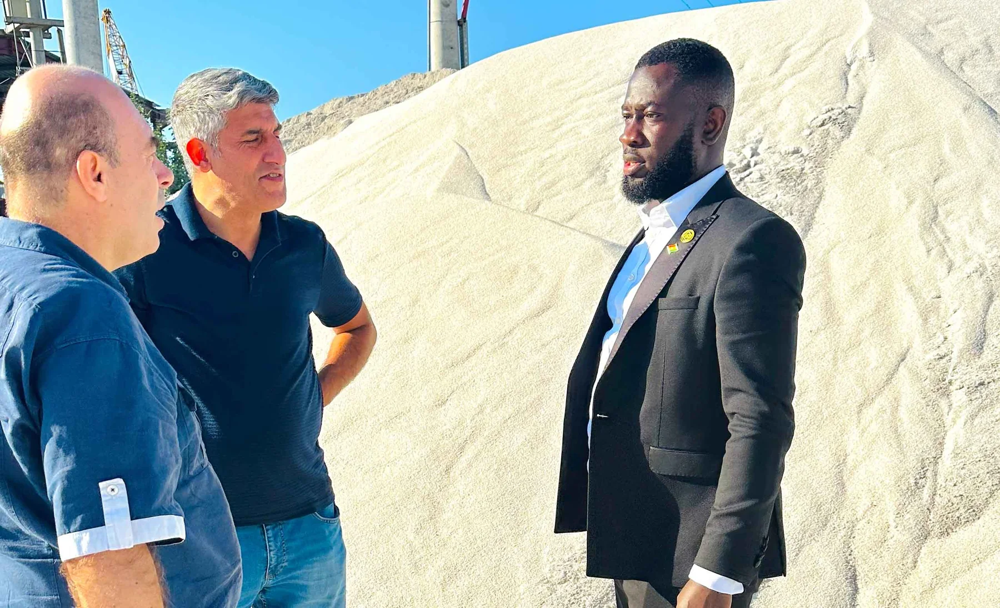
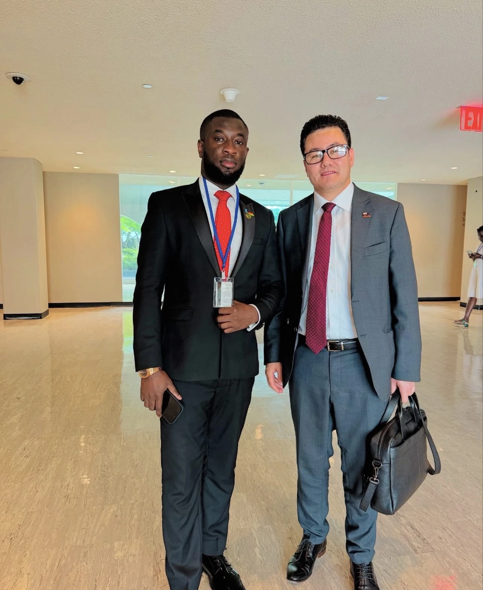
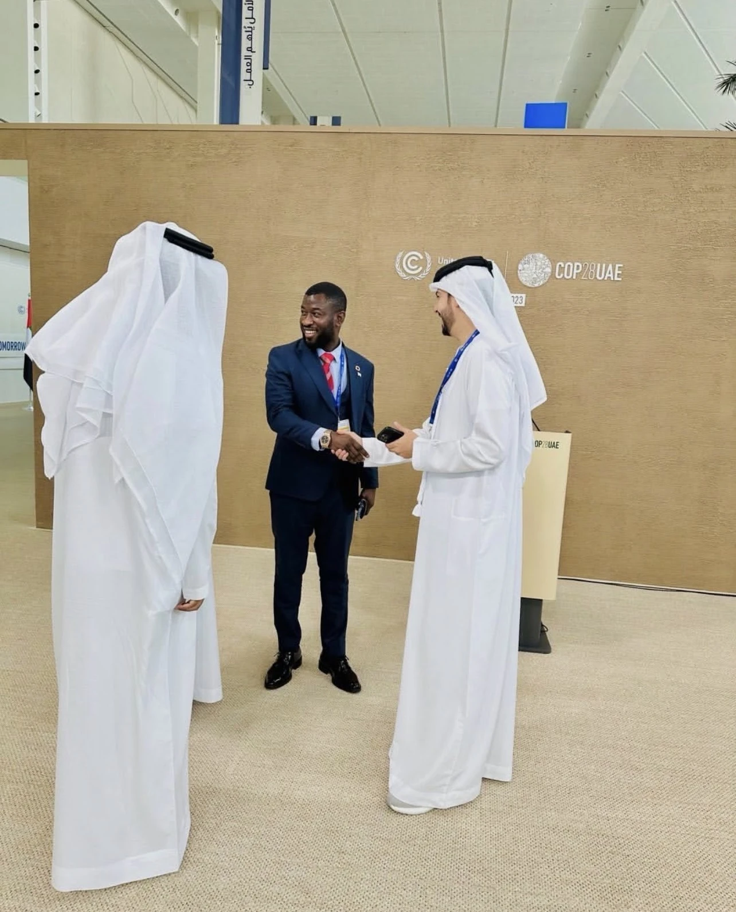
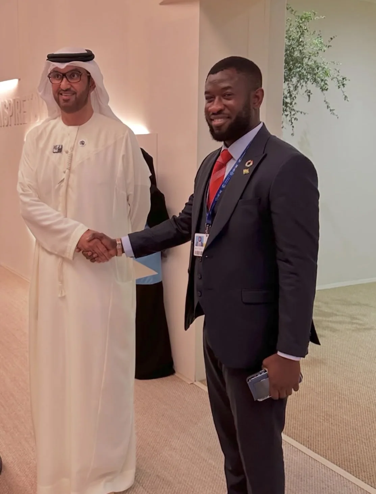
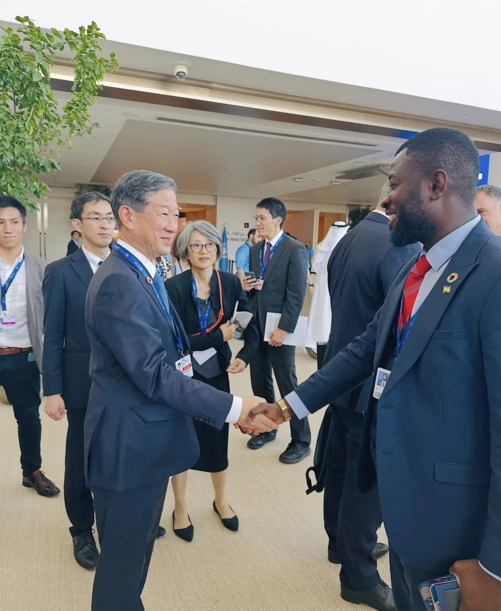

Prepare
Understand the objective, evidence and stakeholders before an approach is made.
Dr Oseadeeyo Nana Kumi Kodie is a Ghanaian traditional leader, Chairman of The Private Office and Group Chief Executive of Dadaba Group Companies Ltd.
Contact the Chairman’s Office

His work is centred on building enterprises and relationships that connect Ghanaian opportunity with responsible international capital, expertise, markets and institutions. Through The Private Office, he provides leadership for market-entry assignments, strategic relationships, business delegations and the early development of suitable commercial partnerships.
He believes that international engagement should be built on preparation, mutual respect and practical value. The Office therefore places emphasis on credible counterparties, clear objectives, documented follow-up and the proper separation of private coordination from public authority.
As Group Chief Executive of Dadaba Group Companies Ltd, he oversees a developing group of Ghanaian enterprises with interests that include agriculture and commodities, property, logistics, energy, travel, professional services and other approved fields. Opportunities are assigned only to the relevant operating company and remain subject to appropriate professional, regulatory and commercial review.
“Our purpose is to create serious relationships that can be translated into responsible trade, investment, knowledge and development. We prepare carefully, speak honestly and remain accountable for the coordination entrusted to us.”
— Dr Oseadeeyo Nana Kumi Kodie
Executive leadership combines local stewardship with direct participation in commercial, institutional and international conversations.



Understand the objective, evidence and stakeholders before an approach is made.
Engage institutions, communities and commercial partners with appropriate context.
Translate discussion into recorded actions, clear ownership and a realistic next step.
Tell us what your organisation is seeking to achieve in Ghana. We will review the objective, scope and proposed timing before suggesting a responsible next step.